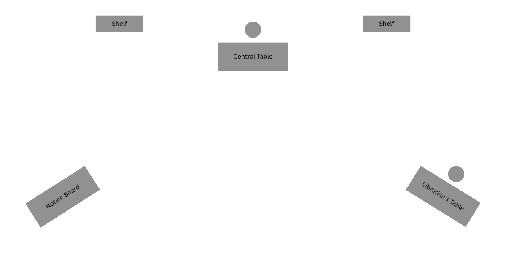

THE KEEPERS OF THE LIBRARY
Production Notes
Notes on the structure, staging, costumes, props, movement and performance of the original production.
Back to The Keepers of the Library01
Structure and Interpretation
The play employs two principal structural devices: a dream-like loop and scenes within the larger scene.
The overall narrative follows a circular structure. The Child begins asleep at the Central Table and, after the events of the play, returns to the same physical position. The repetition is deliberate and contributes to the dream-like ambiguity of the narrative.
The events experienced by the Child may be understood as taking place within her imagination or as a dream. The play deliberately avoids establishing a rigid boundary between reality and imagination.
The Librarian remains grounded in the ordinary world of the library and does not acknowledge or react to the extraordinary events experienced by the Child. Within the larger narrative, certain stories are not merely narrated. They are narrated and simultaneously enacted on stage.
In the Sieve Story, Literature narrates the episode while the Master and Disciple physically enact it in the central performance space. In the Nalanda Scene, History narrates the episode while the students physically enact the events being described. These therefore function as scenes within the larger scene, allowing the audience to experience the stories simultaneously through narration and physical action. The narrating Keeper remains outside the central action while the characters within the narrated story occupy the open central space.
02
Stage Layout
The play uses a fixed stage arrangement. No changes to the physical set are required during the performance. The different scenes are created through the movement and positioning of the actors.
All stage directions in these Production Notes are given from the audience's point of view.

The stage consists of the following principal elements:
- Central Table: Positioned slightly towards the rear centre of the stage. The Child's chair is placed behind it.
- Shelves: Two shelves are positioned towards the rear, one on either side of the Central Table.
- Notice Board: Positioned towards the front-left of the stage. It may display material such as "This Week's Releases."
- Librarian's Table: Positioned towards the front-right of the stage, with the Librarian's chair.
The open areas between these fixed elements provide the principal performance space for the symbolic and historical scenes.
The Central Table remains an important visual anchor throughout the play. It is associated with the Child at the beginning and end of the play and is also incorporated into the Nalanda Scene.
03
Costumes
Child
- Bright, contemporary casual dress.
- The Child should visually stand apart from the Keepers.
Librarian
- Saree (Female).
- Formal shirt and pants (Male).
Stranger
- Completely black costume.
- Black top.
- Black trousers.
- No distinguishing accessory.
The Stranger's completely black appearance visually connects him to the Keepers while distinguishing him from them through the absence of any symbolic object or identifying colour.
History
- Black top.
- Black trousers.
- Red turban.
- Scroll.
Science
- Black top.
- Black trousers.
- White lab coat.
- Test tube.
Art
- Black top.
- Black trousers.
- Brown apron, preferably with visible paint stains.
- Paintbrush.
Literature
- Black top.
- Black trousers.
- Dark blue coat.
- Book.
- Quill pen.
Philosophy
- Black top.
- Black trousers.
- Green shawl, draped around the body.
- Cane.
Master
- Orange robe covering the entire body.
- Sieve.
Disciple
- Kurta of a distinct colour.
- Black trousers.
Nalanda Students
- Kurtas of different colours.
- Black trousers.
The variation in colour helps distinguish the students as individuals from different regions and cultural backgrounds.
04
Props
Library
- Books.
- Central Table.
- Librarian's Table.
- Notice Board.
- Two shelves.
- Stack of books brought by the Librarian.
Keepers
- History: Scroll and turban.
- Science: Test tube and lab coat.
- Art: Paintbrush and apron.
- Philosophy: Cane and shawl.
- Literature: Book, quill and coat.
Master and Disciple
- Sieve.
Nalanda
- Books, including the stack originally placed on the Librarian's Table.
The movement of the stack of books during the Nalanda Scene is intentional and forms part of the visual continuity of the play.
05
Opening and First Keeper Sequence
The Child begins seated at the Central Table, asleep with her head resting upon the single book already placed on the table.
The Librarian enters from the audience's left, carrying a stack of books. She places the stack on the Central Table and then proceeds to the Librarian's Table on the audience's right, where a book is already placed. She sits and begins reading.
The Stranger enters from the audience's right. Following the conversation between the Child and the Stranger, the Stranger begins to leave through the audience's right. Before he can fully exit, History enters from the audience's left.
The Child and Stranger then move towards the centre, with the Child moving ahead of the Stranger. Science enters from the audience's right, helping to re-establish the Child at the centre.
At this point:
- History is positioned towards the audience's left.
- The Child occupies the centre.
- The Stranger stands between the Child and Science.
- Science is positioned towards the audience's far right.
Art and Literature enter from the audience's left. Philosophy also enters from the audience's left. The five Keepers and the Stranger arrange themselves in a semi-circle around the Child, with sufficient spacing to ensure that each character remains visible and does not obstruct another.
06
The Sieve Story
During the narration, the Master and Disciple enact the story in the centre of the stage. The principal characters move towards the sides, leaving the central area open.
Literature occupies a position towards the audience's left and narrates the story. The Child and Stranger remain towards the audience's right and observe the action.
The Master enters from the audience's left, while the Disciple enters from the audience's right. The Master and Disciple enact the story in the central space.
When Literature says:
"Again, and again, and again..."
the Disciple repeats the following action for each repetition:
- The Disciple moves towards the audience's right, carrying the sieve.
- He scoops water into the sieve.
- He begins returning towards the Master.
- Approximately halfway back, he looks down at the sieve and realizes that the water has disappeared.
- He then returns towards the water and repeats the action.
The repetition should be clear to the audience while remaining natural and unhurried.
At the conclusion of the story, the Master exits through the audience's left and the Disciple exits through the audience's right. The Keepers and Stranger then return to their established positions.
07
The Nalanda Scene
The staging arrangement used for the Sieve Story is repeated. The principal characters move towards the sides, leaving the central area open. History occupies the narrating position previously occupied by Literature.
Three students, referred to as Student 1, Student 2 and Student 3, enter during the scene.
Student 1 enters from the audience's left and Student 2 enters from the audience's right. Student 1 moves to the Central Table and sits on it. Student 2 remains positioned to the audience's right of the Central Table.
Student 3 then enters from the audience's left. Upon seeing Student 3, Student 2 crosses in front of the Central Table towards the audience's left to greet Student 3.
Student 2 and Student 3 are now positioned together to the audience's left of the Central Table, while Student 1 remains seated on the Central Table.
When History says:
"Students travelled across kingdoms... simply to learn."
Student 3 enters and approaches Student 2. The two students greet one another using visibly different forms of greeting, suggesting their different cultural backgrounds. One may use a Namaste, while the other performs a Japanese-style bow. The exchange should remain brief and natural.
When History says:
"Fire!"
Student 2 and Student 3 react immediately. They fall towards the audience's right, looking fearfully towards the audience's left as though seeing the approaching fire.
They then scurry away towards the audience's right, giving the impression that they are fleeing the fire.
Meanwhile, Student 1 attempts to protect the books. She brings the stack of books close to herself and hugs them protectively.
As the scene concludes, Student 1 exits through the audience's left, carrying the stack of books.
She leaves one book behind on the Central Table. This is the same book that was already present at the beginning of the play and on which the Child was sleeping.
The principal characters then return to their established positions.
08
Final Sequence
During the Child's final recitation, the Keepers leave in the following order:
- History exits through the audience's left.
- Science exits through the audience's right.
- Art exits through the audience's left.
- Philosophy exits through the audience's right.
- Literature exits through the audience's left.
- Stranger exits through the audience's right.
The Child is left alone at the Central Table.
The Child's return to sleep should be sudden and abrupt. She should appear fully engaged with the book one moment and then, in an almost instantaneous movement, drop forward onto the table, her head coming to rest on the open book exactly as in the opening scene.
The movement should resemble a sudden jolt rather than a gradual decision to sleep.
The Librarian enters from the audience's left, carrying the stack of books. After the Librarian's conversation with the Child, she exits through the audience's right.
The five Keepers and the Stranger then silently appear behind the Child.
The Stranger enters from the audience's right, approaches from behind the Child and speaks to her in a low voice. After delivering his line, the Stranger exits through the audience's left.
The Child grips the back of her chair and begins to rise. After a brief pause, she looks at the book, then chooses to remain seated and opens it.
The Child remains alone at the centre of the stage, reading.
09
Performance Style
The play depends upon a contrast between two worlds. The library should feel ordinary, quiet and grounded. The appearances of the Keepers and the historical scenes should feel imaginative without becoming excessively theatrical or cartoonish.
The Keepers should be played as living embodiments of their disciplines rather than exaggerated stereotypes.
The historical scenes should be physically clear enough for an audience unfamiliar with the script to understand what is occurring.
Pauses are important, particularly before significant revelations or changes in the Child's understanding. However, pauses should remain purposeful and should not unnecessarily slow the overall pace of the performance.